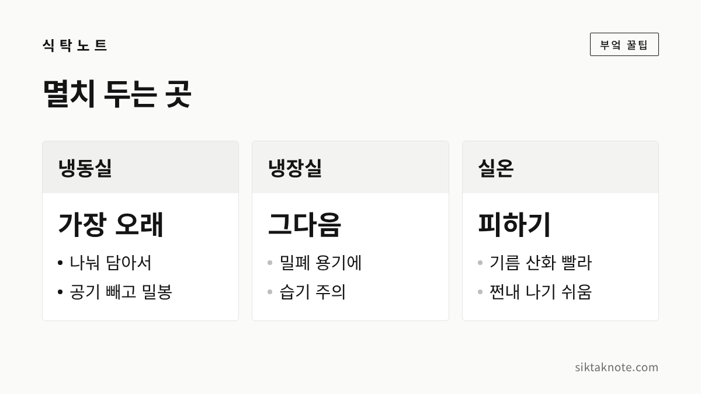
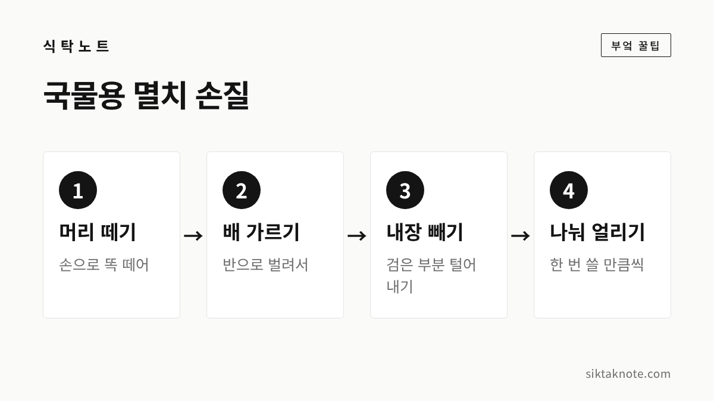

멸치 보관법 — 국물용·볶음용 멸치 냉동 보관과 손질, 쩐내 난 멸치 구별하기

3줄 요약
- 마른 멸치는 따뜻한 곳에 둘수록 기름이 산화해 맛이 빨리 떨어져서, 냉동 보관이 가장 좋습니다.
- 한 번 쓸 만큼 나눠 지퍼백에 담고 공기를 최대한 빼서 얼려요. 국물용은 미리 머리와 내장을 떼어 두면 편합니다.
- 누렇게 변하고 기름 쩐내가 나는 멸치, 곰팡이가 핀 멸치는 아깝더라도 버리는 게 좋습니다.

멸치는 국물 낼 때도, 반찬 만들 때도 손이 자주 가는 재료인데요. 한 번 살 때 넉넉히 사게 되다 보니, 쓰다 보면 어느새 눅눅해져 있거나 꺼낼 때 기름 쩐내가 올라오기도 합니다. 마른 멸치는 오래 두는 재료 같지만 생각보다 맛이 쉽게 변해요. 사 온 날 조금만 손을 써 두면 끝까지 맛있게 쓸 수 있습니다.
국물용 멸치와 볶음용 멸치
멸치는 크기에 따라 대멸, 중멸, 소멸, 자멸, 세멸(지리멸)로 나눠 부르며 팔린다고 하는데요. 국립수산과학원 연구사가 쓴 기고(뉴스토마토)에서는 작은 멸치는 주먹밥용이나 볶음용으로 많이 쓰인다고 소개하고 있습니다.
- 국물용: 몸이 큰 멸치를 주로 씁니다. 크기가 커서 머리와 내장을 떼어 내고 쓰는 경우가 많아요.
- 볶음용: 작은 멸치를 주로 씁니다. 통째로 먹으니 손질할 일이 거의 없습니다.
크기만 다를 뿐 보관하는 법은 같습니다. 다만 큰 멸치는 내장에 기름이 많아 손질해서 넣어 두면 쩐내가 덜하고, 작은 멸치는 한꺼번에 쏟아 쓰기 쉬우니 미리 나눠 두는 게 좋겠습니다.

차가울수록 오래 갑니다
마른 멸치는 기름이 있는 생선이라, 따뜻한 곳에 두면 그 기름이 공기와 만나 산화하면서 색이 누렇게 변하고 쩐내가 나는데요. 1987년 한국식품과학회지에 실린 연구(농수산물유통공사 종합식품연구원)에서는 마른 멸치를 온도별로 두고 맛과 상태를 평가했습니다.
| 보관 온도 | 먹을 만한 기간(연구 결과) |
|---|---|
| 실온 | 4~6개월 |
| 10℃ | 5~8개월 |
| 5℃ | 8~10개월 |
| -3℃ 이하 | 12개월 |
같은 연구에서 보관 온도가 높을수록 기름이 산화하면서 생기는 갈색 변화가 뚜렷해졌다고 해요. 실험 조건에서 나온 숫자라 집 냉장고에서 꼭 이만큼 간다고 할 수는 없지만, 차갑게 둘수록 오래 간다는 건 분명합니다. 그래서 집에서는 냉동실에 두시는 게 가장 좋습니다. 냉장실은 문을 자주 여닫아 습기가 생기기 쉬우니, 냉장실에 둔다면 밀폐 용기에 담아 짧게 쓰세요.

공기를 빼고 한 번 쓸 만큼씩
냉동실에 넣을 때 더 신경 쓸 건 공기인데요. 1985년 한국식품영양과학회지에 실린 연구에서는 포장 재질만으로는 마른 멸치의 산화와 갈변을 막는 데 한계가 있고, 봉지 안 공기를 빼거나 다른 기체로 바꿔야 효과가 있다고 결론을 내렸습니다.
- 큰 봉지로 산 멸치는 한 번이나 일주일쯤 쓸 만큼 나눕니다.
- 지퍼백에 담아 손으로 눌러 공기를 최대한 빼고 닫아요.
- 지퍼백을 한 번 더 겹쳐 담으면 냄새가 다른 음식에 덜 뱁니다.
- 봉지에 날짜와 국물용·볶음용을 적어 두세요.
멸치는 얼려도 딱딱하게 굳지 않아서, 필요한 만큼 집어 쓰고 바로 다시 넣으면 됩니다. 냉동실에서 꺼낸 봉지를 오래 열어 두면 차가운 멸치에 습기가 맺히니, 쓸 만큼 덜어 내고 바로 닫아 주세요.

국물용은 머리와 내장을 미리 떼어 두세요

큰 멸치의 검은 내장은 국물에 쓴맛을 낼 수 있다고 알려져 있는데요. 국물 낼 때마다 손질하기 번거로우니, 사 온 날 한꺼번에 해 두면 편합니다.
- 멸치 머리를 손으로 잡고 똑 떼어 냅니다.
- 몸통을 배 쪽으로 반 갈라 벌려요.
- 안에 있는 검은 내장을 손끝으로 털어 냅니다.
- 손질한 멸치는 한 번 쓸 만큼씩 지퍼백에 나눠 얼려요.
머리는 국물 맛을 낸다고 해서 함께 넣는 분들도 있습니다. 집집마다 입맛이 다르니, 쓴맛이 신경 쓰이면 머리까지 떼고, 진한 맛이 좋으면 내장만 빼셔도 됩니다. 떼어 낸 내장과 부스러기는 쩐내가 빨리 나니 모아 두지 말고 버리세요.

비린내와 눅눅함은 마른 팬에 볶아서
멸치를 국물에 넣기 전에 기름 없는 마른 팬에 살짝 볶으면 비린내가 덜하다고 알려져 있습니다. 남은 물기가 날아가면서 냄새도 함께 빠지거든요. 볶음 반찬을 만들 때도 먼저 마른 팬에 볶아 체에 한 번 털어 내면 부스러기와 가루가 빠져 깔끔합니다.
보관하다 조금 눅눅해진 멸치도 같은 방법이 좋습니다.
- 약한 불에서 마른 팬에 뒤적이며 볶아 물기를 날려요.
- 다 볶으면 넓게 펼쳐 완전히 식힙니다.
- 식은 뒤에 지퍼백에 담아 다시 냉동실에 넣어 주세요.
따뜻한 채로 봉지에 담으면 김이 서려 다시 눅눅해집니다. 다만 눅눅함이 심해 끈적하거나 하얗고 푸른 곰팡이가 보인다면 볶아서 살릴 단계가 아닙니다. 식품의약품안전처는 곰팡이가 핀 건멸치를 부패·변질된 식품으로 보고 단속한 적이 있어요(2015년 보도).
쩐내 난 멸치는 이렇게 알아봐요
멸치에서 오래된 식용유 같은 냄새가 나는 건 기름이 산화했다는 신호인데요. 이런 멸치는 볶거나 국물을 내도 그 냄새가 그대로 남습니다.
- 색: 은빛이 돌던 멸치가 누렇거나 붉은 갈색으로 변해 있어요.
- 냄새: 봉지를 열자마자 찌든 기름 냄새, 쩐내가 올라옵니다.
- 맛: 한 마리 씹어 봤을 때 쓰고 텁텁한 맛이 납니다.
색이 조금 어두운 정도라면 냄새를 맡아 보고 판단하셔도 되지만, 쩐내가 확실히 난다면 아깝더라도 버리시는 게 좋겠습니다. 처음 살 때도 이 기준으로 보시면 됩니다. 은빛이 돌고, 몸이 부서지지 않고 모양이 고르며, 쩐내가 나지 않는 멸치를 고르세요.
자주 묻는 질문
냉동한 멸치는 녹였다가 써야 하나요?
멸치는 물기가 적어 꽁꽁 얼지 않으니 꺼내서 바로 쓰시면 됩니다. 국물에는 그대로 넣고, 볶음은 마른 팬에 먼저 볶아 습기를 날린 뒤 양념하세요.
볶음 멸치 반찬은 어떻게 두나요?
양념해서 볶은 멸치는 마른 멸치와 달리 반찬이라, 식힌 뒤 밀폐 용기에 담아 냉장하고 되도록 빨리 드시는 게 좋습니다.
국물 내고 남은 멸치는요?
한 번 우려낸 멸치는 맛이 거의 빠져 다시 쓰기 어렵습니다. 국물을 낸 뒤에는 건져서 버리시면 됩니다.
멸치처럼 기름과 습기에 약한 마른 식품으로는 김도 있는데요. 김 보관법도 같은 원리라 함께 봐 두시면 좋겠습니다. 생선 손질 전반은 생선 비린내 잡는 손질과 보관법에 정리해 두었습니다.